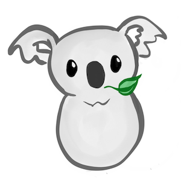
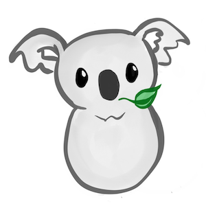
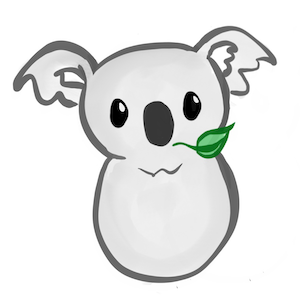

CMPS278 Koala Art Gallery!
 

Koalas are great. They have fluffy ears and are like teddy bears, only they come with a heart <3.
Koalas live in Australia. They are actually more closely related to the kangaroo than bears (they have pouches!). They eat a lot of Eucalyptus plants. They were discovered by Europeans over 200 years ago, and there are records of them being called names like "koolewong", "colo", "koolah", and "boorabee."
Interestingly, koalas have one of the smallest brains in porportion to their body weight. They usually live a solitary life in trees, sleeping up to 18 hours a day.
